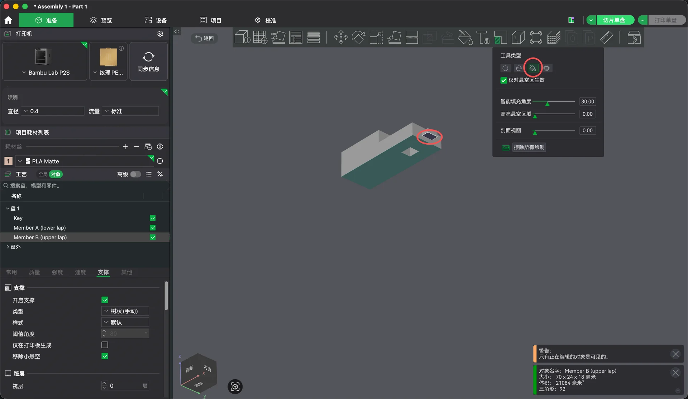
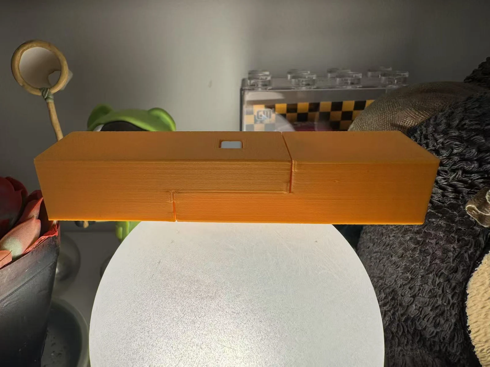

楔钉不是全部，它只负责最后一个自由度。
把这个榫卯理解成“塞一根木钉”，会漏掉它真正在做的事：三层几何依次拿掉不同的运动，每一层都只解决上一层解决不了的那一个。
| 加到哪一层 | 还剩下什么运动 | 这一层负责什么 |
|---|---|---|
| 只有上下半搭 | 沿轴滑动、横向平移、抬起、绕竖轴转动 | 只提供贴合面和厚度分配 |
| ＋小舌进入盲槽 | 只剩沿轴滑动 | 挡住抬起、横移和转动 |
| ＋楔钉贯穿 | 无 | 以剪切挡住沿轴分离 |
这也是为什么小舌被做成插进盲槽的短榫，而不是搭接面上的一个凸台：凸台只能防转，挡不住抬起。
星级是为阅读建立直觉的编辑标记，不是标准化测试。“未知”就是字面意思：这一版还没有实物。
先看它要求怎样装，再决定要不要打印。
拖动上面的拆装进度，或者直接旋转模型。三件在分开时的位置就是它们真实装配路径的逆向：构件 A 沿轴退出，楔钉竖直抽出，构件 B 始终不动。
有，且不可交换：两件必须先合到位，中部方孔才会对齐；孔没对齐时楔钉根本进不去。
靠剪切，不靠摩擦压紧。它横穿在分离方向上，所以两件想沿轴拉开就必须先剪断它。
插入力、层纹、象脚、打进去时孔壁会不会裂——全部要由实物回答，这一版还没有实物。
间隙只加在配合面上，承压面一律贴合。
实际尺寸如下。它们不是从图上量的：两根构件的数字是建模脚本里的常量本身，与 v0.7 一致；楔钉一栏则是 2026-08-30 从 Onshape 工作区读回来的——那枚楔钉是在 v0.7 之后直接在草图里拖出来的，没有标注尺寸，所以长度不是一个整数。对不上的时候，以工作区为准。
| 项目 | v0.7 实际值 | 说明 |
|---|---|---|
| 料截面 | 24 × 18 mm | 两件相同截面 |
| 单件长度 / 装配总长 | 70 mm / 100 mm | 搭接 30 mm，两端各外伸 35 mm |
| 半搭厚度 | 9 mm ＋ 9 mm | 合起来仍是 18 mm |
| 小舌（公） | 7.90 W × 5.00 L × 2.90 H mm | 名义 8 × 5 × 3，各边减去 C/2 |
| 小舌槽（母） | 8.10 W × 5.40 L × 3.10 H mm | 各边加 C/2；端部另留 0.40 mm，故意不承压 |
| 配合间隙 C | 0.20 mm（母 − 公，总量） | 公母各让 0.10 mm，两件因此保持全等 |
| 楔钉孔 | Y 向 7.20 mm 等宽；X 向 6.40 → 8.00 mm | 锥率 0.0889 mm/mm，入口在上表面 |
| 楔钉（工作区现状） | 厚 6.80 mm；6.05 → 7.65 mm；长 17.83125 mm | 锥率 0.0897，与孔的 0.0889 相差 1%；X 向每一层都比孔窄 0.35 mm，Y 向窄 0.40 mm |
| 楔钉落位（计算值） | 头部沉入入口面 3.94 mm，尖端伸出出口面 3.77 mm | 由上面两行推出，未实测；v0.7 的旧楔钉是两面齐平 |
| 搭接角让位 | 45°，边长 0.20 mm，只切中间 23 mm | 两侧各留 0.50 mm 不切 |
| 卯口导入 | 45°，0.50 mm | 在肩面内，装配后不可见 |
- 30 × 24 mm 的搭接面——两件的主要贴合面。
- 两个 24 × 9 mm 肩面——决定装配长度是不是 100 mm。
楔子有一条不能违反的算术。
楔子不可能同时“齐平、贴紧、有间隙”
先说清楚它是什么：孔和楔钉的锥率几乎相同（0.0889 与 0.0897，在整条 17.8 mm 上只差 0.015 mm，不到一条挤出线的宽度）。同锥率的一对不是楔子，是锥塞——两个面之间没有夹角可以让它越压越紧，它靠的是全锥面摩擦，像莫氏锥柄那样。锥度在这里唯一的作用，是把尺寸误差换算成深度。
所以在锥面上留间隙，不会换来“松一点”，只会换来“深一点”。这一版是活的例子：楔钉被改窄了 0.35 mm（孔口 8.00，楔钉头 7.65），于是它要多沉 0.35 ÷ 0.0889 ＝ 3.94 mm 才被孔壁卡住。
- v0.7 的楔钉是零间隙版：它就是孔在顶部 13.5 mm 的那一段轮廓本身，两面齐平落位。它压不进去。
- 工作区现在这一枚给了间隙——X 向窄 0.35 mm、Y 向窄 0.40 mm——好压了，代价是头部沉入 3.94 mm。
- 楔钉还长了：17.83 mm 对 18 mm 的孔深。沉下 3.94 mm 之后，尖端会从出口面伸出 3.77 mm。两头都不齐平。
- 它也不再“掉不下去”：6.05 mm 的尖端比出口面 6.40 mm 的开口还窄，挡住它的是锥面摩擦，不是出口。
- 灵敏度不变：尺寸每差 1 mm，落位移动 1 ÷ 0.0889 ＝ 11.25 mm。打偏 0.05 mm 就是 0.56 mm 的深度差。
能在数字上证明的，和不能的。
tools/verify_keyed_tenon.py 每次重建后都会跑一遍。它的期望值不是抄进去的，而是从建模脚本自己的常量算出来的，所以两个文件不会各说各话。

- 18 个特征全部重建通过。
- 三个零件的包围盒与体积对上解析值：A 21135.8310 mm³、B 21083.9910 mm³、楔钉 830.5796 mm³。校验脚本读的是工作区，所以楔钉改画之后它先报了错，直到建模脚本里的常量跟着改回一致。
- 两件在楔钉孔以外逐点全等：38 / 38 个顶点重合。
- 布尔并集探针测得互相侵入 0.000000 mm³——两件只在搭接面和两个肩面相遇。
方向可以设计，悬空却要自己涂出来。
建模时选的方向是侧面朝下：着床面 70 × 18 mm，高 24 mm，成长方向 Y，层面是 X-Z 平面。理由是所有要紧的内凹角都落在层面上，两处让位因此能直接画进 Front 草图，而且小舌不会悬空。
首轮实际是按平躺切的：着床面 70 × 24 mm，高 18 mm，层面是 X-Y 平面，搭接面朝上。这个方向更稳、平面精度更好，但它让小舌变成了悬空——而且必须手动涂支撑。
- 小舌不坐在搭接面上，它悬在剩余 9 mm 截面的正中间：A 件的小舌占 z ＝ 3.05 → 5.95 mm。
- 它的底面因此是一块 7.90 × 5.00 mm 的水平面，离台面 3.05 mm，下面什么都没有。
- 两根构件各有一个，共两处。这两块面同时是配合面。
树状（手动）。手动模式下支撑只跟着涂过的地方走，不涂就没有。
两个小舌的悬空底面，各 7.90 × 5.00 mm，并勾选“仅对悬空区生效”。
自动会往小舌槽里也塞支撑。那是 8.10 mm 的短跨，桥接就够，塞进去反而取不出来。

两件合上了，但要用力压。
下面是照片，不是渲染。两根构件已经合拢，搭接接缝连成一条线，中间的方孔从上表面直通到下表面——照片里能透过它看到背景，因为这一张没有插楔钉。

- 打印机：拓竹 P2S
- 喷嘴：0.4 mm；材料：PLA Matte
- 方向：平躺，着床面 70 × 24 mm
- 支撑：树状（手动），只涂两处小舌底面
- 两件能合到底，但需要明显用力压入。
- 楔钉相对容易压入。
- 接缝合成一条线，肉眼没看到崩口。
第一轮已经把问题缩小了：为什么压不动。
首轮回答了“能不能合上”——能，但要用力。下一轮要回答的是这股力从哪来。四个候选里有三个可以直接量，请一次只动一个变量。
- 小舌高 2.90 mm，槽高 3.10 mm，上下各 0.10 mm。
- 小舌的底面是这一轮唯一靠支撑成形的面，支撑痕只会让它变高。
- 槽的顶面是一段 8.10 mm 的桥接，桥接只会往下垂，让槽变矮。
- 两个偏差方向相同，都在啃同一条 0.20 mm。量一下小舌实际高度和槽实际高度，这一条就成立或出局。
- 小舌 / 槽的 C ＝ 0.20 mm：改成 0.30 或 0.40 mm 再打一件，看“用力压”是否消失、肩面是否仍同时贴合。
- 搭接角 0.20 mm 让位：先看它在实物上是否成形——0.20 mm 的 45° 缺口比 0.4 mm 喷嘴还窄，很可能根本没被切出来；再看两条 0.5 mm 未让位窄边是否明显顶住。
- 楔钉落位：把楔钉压到底，量头部沉入了多少。预测是 3.94 mm 沉入、尖端伸出 3.77 mm；同时记下用的是哪一版楔钉。
- 孔壁：楔钉打到底时，7.20 mm 孔的侧壁有没有裂。
历史只讲到足够理解。
现代中文资料通常把楔钉榫用于弧形材的对接，最常被举的例子是圈椅的月牙扶手，此外还有香几、坐墩、圆杌凳和圆形边框、托泥等部位。两段弧材的拼口既要保持线条连续，又要挡住上下与左右的错移，正好需要这样一组分层约束。